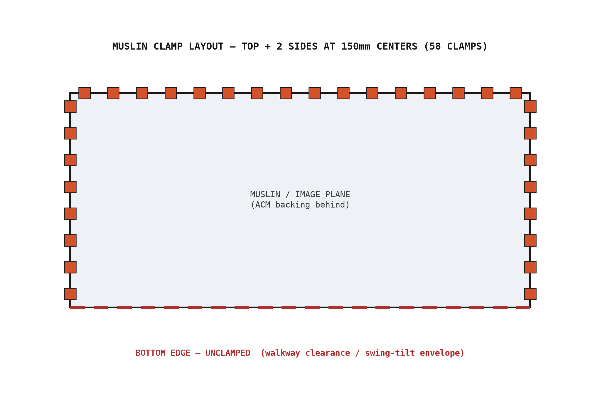

Operating Manual — TBS-001¶
Before you begin: Read this manual end-to-end once before your first deployment. Each phase has a time estimate and a GO/NO-GO checkpoint. Do not proceed past a checkpoint unless all conditions are met.
1. Quick Reference¶
| Phase | What | Time |
|---|---|---|
| 0 | Pre-departure (home/workshop) | ~2 hours |
| 1 | Site setup | ~1.5 hours |
| 2 | Load image plane (red light) | ~45 min |
| 3 | Exposure | ~30–45 min (baseline) |
| 4 | Development | ~20 min |
| 5 | Cleanup and close-down | ~30 min |
| Total | First print, ideal conditions | ~5–5.5 hours |
Baseline exposure is 30–45 minutes under direct full sun, ISO equivalent ~2–4. See the Exposure Adjustment Table for cloud cover and time-of-day corrections.
2. Chemistry Choice — With or Without Ammonium Dichromate¶
Decide this before mixing Part B. The baseline sensitizer is iron-only. Adding ammonium dichromate steepens the print's contrast. It is a creative choice, but it changes how Part B is mixed (§0.3), how the sensitizer and the unwashed print are handled (§2.4, §2.5, §4.1), where the first wash drains (§4.2) and how the wash water is disposed of (§5.4, TU.6). Each of those steps gives the dichromate variant in place; the basis is in Wash-Water Classification.
3. Phase 0 — Pre-Departure¶
Time: ~2 hours. Complete the day before or morning of shoot day at your workshop/home. Lighting: normal white light throughout this phase.
0.1 Water System¶
Valve and pump tags are on the panel labels; the layout is in the Plumbing Report.
Starting positions (before filling)
- 0.1.1 — Check the master pump switch (Electrical Panel) is OFF.
- 0.1.2 — Check drain-pump switches S-05 and S-03 (near-upper side board) are OFF.
- 0.1.3 — Check the outlet valve on each tote (IBC-1 to IBC-4) is closed and capped. These valves stay closed.
- 0.1.4 — Close BV-01 and BV-03 (pump suctions).
- 0.1.5 — Close BV-02 and BV-07 (drain-pump suctions).
- 0.1.6 — Close BV-04 (TAP-01).
- 0.1.7 — Close BV-06 (spray off).
- 0.1.8 — Check the X3 and X4 dust caps are on.
- 0.1.9 — Confirm Brown IBC-3 and Waste IBC-4 are empty.
- 0.1.10 — Open the Blue tote vents BV-08 (IBC-1) and BV-09 (IBC-2), high on the totes' walkway face (step stool).
- 0.1.11 — Check all four vent screens are clear.
Fill — before the container is lifted
- 0.1.12 — Remove the X1 dust cap.
- 0.1.13 — Connect the supply hose to X1.
- 0.1.14 — Fill the Blue totes: 900 L in each of IBC-1 and IBC-2 (1,800 L, 476 gal in all).
- 0.1.15 — Disconnect the hose.
- 0.1.16 — Re-cap X1.
Operating positions
- 0.1.17 — Open BV-01 (P-01 suction).
- 0.1.18 — Open BV-03 (P-02 suction).
- 0.1.19 — Set BV-05 to Blue.
- 0.1.20 — Set 3W-DV-02 to Brown (IBC-3).
- 0.1.21 — Open the Brown and Waste tote vents BV-10 (IBC-3) and BV-11 (IBC-4).
Test
- 0.1.22 — Open BV-06 (spray on).
- 0.1.23 — Switch ON P-01 (circuit C1).
- 0.1.24 — Run the spray bar for 60 seconds.
- 0.1.25 — Check the spray pattern is even across the full image-plane width.
- 0.1.26 — Check all pipe joints for drips.
- 0.1.27 — Tighten any weeping fittings.
- 0.1.28 — Switch P-01 OFF.
- 0.1.29 — Close BV-06.
- 0.1.30 — Check the P-04 suction pickup is seated in the sump well.
- 0.1.31 — Check the P-04 suction hose is connected over the tray rim.
- 0.1.32 — Close all four tote vents (BV-08 to BV-11) before the container is lifted.
0.2 Chemistry — Part A (Ferric Ammonium Oxalate)¶
Lighting: white light.
⚠ Recipe not yet locked. The Sensitizer Trials set the strength tier; use Standard (½-Ware) until they do.
| Tier (per print) | Ferric ammonium oxalate (dry) | Part A water (warm) | mixed strength | For 50 prints |
|---|---|---|---|---|
| Lean (⅓-Ware) | 222 g | ~1.1 L | 10 g/100 ml | 11.1 kg |
| Standard (½-Ware) — default | 334 g | ~1.1 L | 15 g/100 ml | 16.7 kg |
| Rich (full-Ware) | 668 g | ~1.1 L | 30 g/100 ml | 33.4 kg |
- 0.2.1 — Heat the water to 50–60°C (a kettle left 2 minutes after boiling).
- 0.2.2 — Weigh the ferric ammonium oxalate into a mixing jug.
- 0.2.3 — Pour the warm water over it.
- 0.2.4 — Stir until fully dissolved: clear pale yellow-green, not cloudy (3–5 minutes).
- 0.2.5 — Let it cool to room temperature.
- 0.2.6 — Pour it into a dark bottle and seal it.
- 0.2.7 — Label it PART A — FERRIC AMMONIUM OXALATE (WARE).
0.3 Chemistry — Part B (Potassium Ferricyanide, + Ammonium Dichromate if chosen)¶
Lighting: white light.
| Tier (per print) | Potassium ferricyanide | Part B water |
|---|---|---|
| Lean (⅓-Ware) | 74 g | ~1.1 L |
| Standard (½-Ware) — default | 112 g | ~1.1 L |
| Rich (full-Ware) | 222 g | ~1.1 L |
- 0.3.1 — Weigh the potassium ferricyanide into a second jug.
- 0.3.2 — Add room-temperature water.
- 0.3.3 — Stir until fully dissolved (yellow-orange).
- 0.3.4 — Label it PART B — KFe.
Dichromate option only — 0.1% of the working volume for Ware's baseline contrast, up to 0.4% for more (trial T3 sets it): 2.2–8.8 g per print.
⚠ Ammonium dichromate is a Category 1A carcinogen and an oxidizer. Weigh it in a ventilated space. Do not inhale the dust.
- 0.3.5 — Put on nitrile gloves.
- 0.3.6 — Weigh the ammonium dichromate.
- 0.3.7 — Add it to the Part B jug.
- 0.3.8 — Stir until dissolved (bright orange-red).
- 0.3.9 — Relabel the jug PART B — KFe + AmDichr.
Storage: Part A and Part B keep 6–8 weeks in sealed dark bottles. Mixed together, the working sensitizer lasts 4–6 hours — mix only what the session needs.
0.4 Equipment Checklist¶
Everything below is in the Master Shopping List (print-tools + safety).
Chemistry and coating - [ ] 0.4.1 — Part A bottle, sealed and labeled - [ ] 0.4.2 — Part B bottle, sealed and labeled (relabeled if it carries dichromate, §0.3.9) - [ ] 0.4.3 — 3 × 2-liter graduated mixing jugs - [ ] 0.4.4 — Funnel and stirring rod - [ ] 0.4.5 — Digital scale (1 g resolution) - [ ] 0.4.6 — 18" foam rollers + 2 roller trays (one set per coat) - [ ] 0.4.7 — 4" foam brushes (edges) - [ ] 0.4.8 — Spray bottle (low-humidity misting, §2.3) - [ ] 0.4.9 — Pre-cut muslin, 4,249 × 2,000mm, pre-washed twice in hot water with no detergent and fully dry - [ ] 0.4.10 — Light-safe bag for the muslin
Measurement - [ ] 0.4.11 — Digital thermometer-hygrometer - [ ] 0.4.12 — pH test strips - [ ] 0.4.13 — Timer - [ ] 0.4.14 — Spirit level
PPE and safety - [ ] 0.4.15 — Nitrile gloves (minimum 4 pairs) - [ ] 0.4.16 — UV-blocking safety glasses - [ ] 0.4.17 — Full-length chemical-resistant apron - [ ] 0.4.18 — Red LED headlamp - [ ] 0.4.19 — First aid kit in place - [ ] 0.4.20 — ABC fire extinguisher in place - [ ] 0.4.21 — Drinking water and sunscreen
Repair and access - [ ] 0.4.22 — Black silicone sealant - [ ] 0.4.23 — Gaffer tape - [ ] 0.4.24 — Folding step stool - [ ] 0.4.25 — Consumables restock: spare roller covers, brushes and gloves
0.5 Container Pre-Check (if accessible)¶
- 0.5.1 — Check the interior for water ingress.
- 0.5.2 — Check the image plane is free of condensation.
- 0.5.3 — Check the door perimeter seals are intact.
- 0.5.4 — Check the film plane moves freely at all four corners.
- 0.5.5 — Fit the near, far and right walkway gratings onto their bracket arms.
- 0.5.6 — Secure each grating with its clips.
- 0.5.7 — Fit the left walkway lift-out onto its 5 floor-leg brackets.
- 0.5.8 — Lay fresh 6-mil black LDPE liner over the tray, lapping 50mm over the rims.
0.6 Transport Booking (when the container moves)¶
- 0.6.1 — Check the route against the state DOT size and weight limits (Container Report Part 2).
- 0.6.2 — Ask the hauler to put the sealed (rear) end over or near the trailer axle(s) (Weight Distribution Report §6.3).
- 0.6.3 — Give the hauler the loaded haul weight, Blue full (Transportation Options §1).
- 0.6.4 — Confirm the truck is rated for it.
- 0.6.5 — Tilt-bed only: confirm the bed tilt stays under ~25° while loading and unloading (Transportation Options §3).
GO/NO-GO checkpoint: Water system tested and IBCs filled. Part A and Part B prepared and sealed. All equipment packed. Container interior inspected (if accessible).
4. Phase 1 — Site Setup¶
Time: ~1.5 hours. Complete on arrival at site. Lighting: normal white light / daylight.
1.1 Site Selection¶
- 1.1.1 — Ground is level to within 5° (spirit level on the container floor after delivery).
- 1.1.2 — Nothing blocks the subject from the pinhole wall within 5m.
- 1.1.3 — A shade structure can go over the container (trees, canopy, building shadow) - if conditions predicate it.
- 1.1.4 — A solar area with clear southern exposure, ~4m × 3m.
- 1.1.5 — Water source within 20m, or tanker access for the tote fill.
- 1.1.6 — Emergency vehicle access is not blocked.
- 1.1.7 — Check the forecast for lightning before departure.
- 1.1.8 — Check it again on site.
Lightning: do not occupy the container in a thunderstorm — step out and well away until it passes.
1.2 Container Positioning¶
- 1.2.1 — Have the driver set the container with the cargo doors at 90° to the subject and the pinhole wall facing it.
- 1.2.2 — Check level.
- 1.2.3 — Correct up to 50mm with timber sleepers under the corner castings.
- 1.2.4 — Open the cargo doors.
- 1.2.5 — Inspect the interior (if not done in §0.5.1).
1.3 Mode Conversion — Transport to Operational¶
Time: ~10 minutes. Single-person operation.
The container arrives in transport mode: panel swung in and held by the two wall stays; the left film rails (TL + BL), the left walkway and the two apron strips stowed.

- 1.3.1 — Open and secure the cargo doors.
- 1.3.2 — Open all four tote vents (BV-08 to BV-11).
- 1.3.3 — Slack the bottom wall-stay turnbuckle.
- 1.3.4 — Pull the cotter and clevis pin at the bottom wall-anchor eye.
- 1.3.5 — Swing the bottom stay clear (or unpin both ends and stow it).
- 1.3.6 — Release the 2 ratchet straps on the evaporative cooler (near-walkway stowage).
- 1.3.7 — Carry the cooler out through the door opening (~7 kg / 16 lb, one person).
- 1.3.8 — Set the cooler on the ground beside the pinhole wall, near the Ø200mm duct stub.
- 1.3.9 — Remove the weatherproof cap from the wall stub.
- 1.3.10 — Connect the flex duct from the cooler outlet to the wall stub collar.
- 1.3.11 — Tighten the hose clamp.
- 1.3.12 — Fill the cooler reservoir (~18 L) from TAP-01 (open BV-04, then close it).
- 1.3.13 — Carry the three solar panels out through the door opening.
- 1.3.14 — Carry in all the equipment from the §0.4 checklist.
- 1.3.15 — Slack the top wall-stay turnbuckle.
- 1.3.16 — Pull the cotter and clevis pin at the top wall-anchor eye.
- 1.3.17 — Swing the top stay clear (or unpin both ends and stow it).
- 1.3.18 — Swing the panel back ~56° to the door plane, assisted.
- 1.3.19 — Control its momentum at the stop.
- 1.3.20 — Lift and turn both 1619A74 cam latches to latch the panel to the door frame.
- 1.3.21 — Set each apron strip (near + far) onto its 45° base chamfer.
- 1.3.22 — Butt each strip up to the leaf lip.
- 1.3.23 — Close the two bottom 1590A13 draw latches on each strip (from inside).
- 1.3.24 — Close the two span draw latches on each strip (from the door side).
- 1.3.25 — Check the EPDM seals at the chamfer, lip and strip ends are seated.
- 1.3.26 — Drop each left film rail (TL + BL) into its saddles.
- 1.3.27 — Clamp each rail down.
- 1.3.28 — Check the film plane is square and planar to datum.
- 1.3.29 — Refit the left walkway and the door-end near-deck lift-out.
- 1.3.30 — Un-pin the revolving drum.
- 1.3.31 — Do the dark-adaptation check (§1.4.5).
1.4 Light Trap — Revolving Drum Panel¶
- 1.4.1 — Check the drum panel is closed.
- 1.4.2 — Check both 1619A74 cam latches are engaged.
- 1.4.3 — Check the EPDM perimeter gasket is seated, with no gaps or folds.
- 1.4.4 — Turn the drum one full revolution by hand: no binding (a light, even brush drag is normal).
- 1.4.5 — Step into the drum and turn it through to the interior.
- 1.4.6 — Wait 5 minutes for dark adaptation.
- 1.4.7 — Check no light is visible at any drum position.
- 1.4.8 — Mark any leak with chalk.
- 1.4.9 — Seal it with black silicone before proceeding.
Safety: step into the opening and turn the drum 180° until the opening faces the other side. Keep hands clear of the opening edges as they pass the housing.
1.5 Solar Power System¶
- 1.5.1 — Set the solar panels on south-facing ground or a roof rack, at 30° from horizontal.
- 1.5.2 — Connect the panels in parallel to the Victron SmartSolar MPPT 100/50.
- 1.5.3 — Connect the controller to the battery bank. Observe polarity.
- 1.5.4 — Connect the Blue Sea fuse block to the battery positive busbar.
- 1.5.5 — Read the battery voltage on the controller: 12.6–13.2V.
- 1.5.6 — Below 12.0V: charge before proceeding.
- 1.5.7 — Check fuses A (exhaust fan) and B (intake fan) are seated.
- 1.5.8 — Check fuses C1 (corridor pumps) and C2 (tray-drain pump P-04) are seated.
- 1.5.9 — Check fuses D (red safelight) and F (white light) are seated.
- 1.5.10 — Check the Circuit-E 40A ANL fuse is seated.
- 1.5.11 — Close the Circuit-E disconnect (Blue Sea 6006).
- 1.5.12 — Check drain-pump switches S-05 and S-03 are OFF.
- 1.5.13 — Check the main-panel bond lug is tight.
- 1.5.14 — On timber sleepers over soil only: drive the 8-ft earth stake beside the power panel (Electrical Report §7.3).
- 1.5.15 — Clamp the stake to the main-panel earth terminal (or bond to a building ground or grounded water pipe instead).
Shore power: only from an RCD/GFCI-protected supply, into the NEMA 5-15 inlet on the exterior (Victron IP65 charger). Never run an extension cord or generator into the wet interior. Leave it connected whenever available.
1.6 Ventilation and Cooling¶
- 1.6.1 — Switch ON the exhaust fan (circuit A).
- 1.6.2 — Switch ON the intake fan (circuit B).
- 1.6.3 — Hold a tissue at each duct stub: it should deflect.
- 1.6.4 — Hot weather: switch ON the evaporative cooler (circuit E).
- 1.6.5 — Run it at least 30 minutes before entry when it is above 30°C outside.
- 1.6.6 — Check the interior is below 35°C before loading.
- 1.6.7 — If using the shade canopy, erect it before solar noon.
Heat safety: do not enter if the interior is above 40°C (thermometer hung inside).
1.7 Walkway and Tray (if not done in Phase 0)¶
- 1.7.1 — Fit the walkway gratings (§0.5.5).
- 1.7.2 — Lay the LDPE liner (§0.5.8).
- 1.7.3 — Release the chemistry prep shelf's cam latch.
- 1.7.4 — Lower the board onto its two chain stays.
- 1.7.5 — Check both chains are taut and their quick-links closed.
- 1.7.6 — Check the board is level.
- 1.7.7 — Wipe the surface and clear the spill lip (Chemistry Prep Shelves).
1.8 Light-Leak Inspection¶
- 1.8.1 — Check both drum-panel cam latches are engaged.
- 1.8.2 — Enter through the drum.
- 1.8.3 — Switch OFF the white light (circuit F).
- 1.8.4 — Switch OFF the safelight (circuit D).
- 1.8.5 — Stand still 5 minutes for dark adaptation.
- 1.8.6 — Inspect all seams, door perimeters and duct penetrations for light.
- 1.8.7 — Seal any leaks with black silicone or gaffer tape.
- 1.8.8 — Repeat the inspection.
GO/NO-GO checkpoint: All leaks sealed. Interior below 35°C. Battery above 12.4V. Blue supply flows evenly at the spray bar (§0.1.25).
1.9 Film Plane — Tilt, Swing and Focus¶
Corner depths are in the Film Plane Mechanism Report §5.
- 1.9.1 — At each corner, roll the skate along its U-channel to the target depth.
- 1.9.2 — Slide the Z and X cross-slides to take up the arc.
- 1.9.3 — Throw the cam clamp to lock the skate.
- Pure tilt: TL + TR to one depth, BL + BR to another.
- Pure swing: TL + BL together, TR + BR together.
- Back focus: all four by the same amount.
- Compound (limited): a coordinated set of four depths.
- 1.9.4 — Check all four cam clamps are locked.
5. Phase 2 — Loading the Image Plane¶
Time: ~45 minutes. Red safelight only (circuit D) — no white light, no daylight.
2.1 Water Capacity — GO/NO-GO¶
Before mounting the muslin.
- 2.1.1 — Enter through the drum.
- 2.1.2 — Check IBC-3 and IBC-4 each have room for one print: level at or below 940 L on the tote scale.
- 2.1.3 — Either tote above 940 L: NO-GO. Pump it out (TU.6 onward) before printing.
- 2.1.4 — Check IBC-1 and IBC-2 each hold at least 90 L of Blue on the tote scale.
- 2.1.5 — Either below 90 L: NO-GO. Top up Blue (TU.1 onward) before printing.
2.2 Mounting the Muslin¶

- 2.2.1 — Switch ON the safelight (circuit D, electrical panel). Red only.
- 2.2.2 — Check the HDPE filler strip is seated in the frame's L channel on the three clamped edges.
- 2.2.3 — Take out the pre-cut muslin.
- 2.2.4 — Clamp the top edge first: hook each nylon spring clamp over the frame edge at 150mm centers (30 clamps).
- 2.2.5 — Clamp the left edge (14 clamps), pulling the fabric taut outward.
- 2.2.6 — Clamp the right edge (14 clamps), pulling the fabric taut outward.
- 2.2.7 — Tension the unclamped bottom edge downward.
- 2.2.8 — Secure it flat against the plane so it cannot flap.
- 2.2.9 — From 2 meters, check for wrinkles or sags under the safelight.
2.3 Humidity Check — GO/NO-GO¶
Before mixing.
| Humidity | Action |
|---|---|
| Below 30% (typical Palm Springs) | Mist the muslin lightly with plain water 5 min before coating |
| 30–70% | Coat normally |
| Above 70% | NO-GO — do not mix; wait for the humidity to drop (the coat may not dry, risking fog) |
- 2.3.1 — Read the hygrometer.
- 2.3.2 — Above 70%: stop. Do not mix.
- 2.3.3 — Below 30%: mist the muslin lightly with plain water.
2.4 Mix the Working Sensitizer¶
At the chemistry prep shelf, under the safelight.
| For 1 print (9.19 m², 2 coats) | Volume |
|---|---|
| Part A | ~1.1 L |
| Part B | ~1.1 L |
| Working sensitizer | ~2.2 L |
- 2.4.1 — Dichromate option: put on gloves, UV glasses and apron.
- 2.4.2 — Pour equal volumes of Part A and Part B (from the chemistry prep shelf) into the third jug.
- 2.4.3 — Stir gently (it turns yellow-green).
- 2.4.4 — Pour it into the roller tray.
Mixed sensitizer: work quickly; coat straight away.
2.5 Applying the Sensitizer¶
Aim to finish within 20 minutes.
- 2.5.1 — Put on gloves (plus glasses and apron with the dichromate option).
- 2.5.2 — Load the foam roller.
- 2.5.3 — Roll the excess off on scrap card — evenly loaded, not dripping.
- 2.5.4 — First coat: roll horizontally, left to right, top to bottom, 50% overlap.
- 2.5.5 — Second coat, while the first is still wet: roll vertically, top to bottom.
- 2.5.6 — Brush the last 50mm of each edge with a foam brush.
- 2.5.7 — Lift the roller out of the tray (it skins over if left in sensitizer).
- 2.5.8 — Set the tray and roller aside for cleanup (§5.1.5) — never pour leftover sensitizer down a drain.
2.6 Tack-Drying¶
- 2.6.1 — Check fans A and B are running (circuits A and B).
- 2.6.2 — Wait 15–20 minutes until the coat turns from glossy to matte.
- 2.6.3 — Touch a corner with a gloved fingertip: nothing transfers.
Do not proceed with a wet coat.
6. Phase 3 — Exposure¶
Time: ~30–45 minutes baseline. Shutter operated from outside.
3.1 Exposure Calculation¶
Baseline: 30–45 minutes in direct sun, mid-morning to mid-afternoon, summer.
| Condition | Multiply baseline by |
|---|---|
| Full direct sun | × 1.0 |
| Thin haze / milky sky | × 1.5 |
| Broken cloud (50% coverage) | × 2.0 |
| Heavy overcast | × 4.0 |
| Early morning / late afternoon (2h before/after sunset) | × 2.0 |
| Winter sun at mid-latitude | × 1.5 |
Compound conditions multiply (thin haze + early morning: 1.5 × 2.0 = × 3.0).
Test strip (critical work): coat a 200mm × full-height strip, expose in 5-minute steps under a card mask, develop, and compare.
3.2 Opening the Shutter¶
- 3.2.1 — Check both drum-panel cam latches are engaged.
- 3.2.2 — Set the timer.
- 3.2.3 — Open the pinhole shutter from the exterior handle.
During exposure: do not open any doors, stand in front of the pinhole wall, or let shadows cross the pinhole.
3.3 Monitoring During Exposure¶
- 3.3.1 — Every 15 minutes, read the battery voltage on the MPPT display.
- 3.3.2 — Below 11.8V: switch off the evaporative cooler.
3.4 Closing the Shutter¶
- 3.4.1 — At the calculated time, close the shutter from the exterior handle.
- 3.4.2 — Check the slide is at its closed stop and the plate covers the aperture.
GO/NO-GO checkpoint: Shutter confirmed closed. Elapsed time within ± 2 min of target.
7. Phase 4 — Development¶
Time: ~20 minutes. Lighting: red safelight on entry; white light (Circuit F) once the first wash begins.
4.1 Entering and Removing the Muslin¶
- 4.1.1 — Enter through the drum.
- 4.1.2 — Switch ON the safelight (circuit D). Red only.
- 4.1.3 — Put on gloves (the unwashed print carries sensitizer).
- 4.1.4 — Open the clamps top-down, supporting the fabric as it releases.
- 4.1.5 — Roll the spray-bar gantry to the near (pinhole-wall) end and park it.
- 4.1.6 — Feed the muslin face-up through the far muslin-drop slot.
- 4.1.7 — Draw it across the tray to the parked beam until it lies flat on the liner (Processing Tray & Spray Bar §2.8 and §3.4).
4.2 Development in Water¶
- 4.2.1 — Attach the telescoping pole to the arm tube.
- 4.2.2 — Check BV-01 and BV-03 are open.
- 4.2.3 — Set BV-05 to Brown.
- 4.2.4 — Set 3W-DV-02: Brown for the baseline, Waste for the dichromate option.
- 4.2.5 — Open BV-06.
- 4.2.6 — Switch ON the master pump switch (P-02 and P-04 run).
- 4.2.7 — First print after a resupply (IBC-3 empty): use Blue instead — BV-05 to Blue, run P-01, not P-02.
- 4.2.8 — Pass 1: traverse the spray bar across the whole surface with the pole (~50mm/s, ~44s a pass) for 5 minutes.
- 4.2.9 — Switch to white light (Circuit F).
- 4.2.10 — Baseline: if the drain water is deep yellow, orange or green, set 3W-DV-02 to Waste.
- 4.2.11 — Pass 2: set BV-05 to Blue.
- 4.2.12 — Switch to P-01 (P-02 off).
- 4.2.13 — Dichromate option: set 3W-DV-02 back to Brown.
- 4.2.14 — Traverse for ~5 minutes.
- 4.2.15 — Pass 3: keep BV-05 on Blue and traverse ~5 more minutes.
- 4.2.16 — Close BV-06.
- 4.2.17 — Let P-04 run ~30 seconds to clear the sump.
- 4.2.18 — Switch OFF the master pump switch.
Visual check after pass 2: blue shadows against white highlights. A faint image is underexposed — finish washing and drying first (pale prints darken as they dry); if still flat, re-expose at 1.5×.
Valve matrix¶
P-04 drains throughout all three passes:
| Valve / pump | Default | Pass 1 (Brown recycle) | Pass 2 (Blue) | Pass 3 (Blue final) | Stop |
|---|---|---|---|---|---|
| BV-01 (P-01 suction) | Open | Open | Open | Open | Open |
| BV-03 (P-02 suction) | Open | Open | Open | Open | Open |
| BV-05 (spray selector) | Blue | Brown | Blue | Blue | — |
| BV-06 (spray on/off) | Closed | Open | Open | Open | Closed |
| BV-04 (TAP-01 chemistry tap) | Closed | Closed | Closed | Closed | Closed |
| BV-02 / BV-07 (P-05 / P-03 drain suctions) | Closed | Closed | Closed | Closed | Closed |
| S-05 / S-03 (drain-pump switches) | Off | Off | Off | Off | Off |
| 3W-DV-02 (tray drain) | Brown | Brown (baseline) / Waste (dichromate) | Brown | Brown | Brown |
| P-01 (Blue supply) | Off | Off | On | On | Off |
| P-02 (Brown pump) | Off | On | Off | Off | Off |
| P-04 (tray drain, C2) | Off | On | On | On | Off (after sump clear) |
| 3W-DV-01 (filter out) | Brown buffer | Brown | Brown | Brown | Brown |
Diverter decisions¶
3W-DV-02 (tray drain)
- Brown (default): baseline washes, and passes 2–3 with the dichromate option.
- Waste — dichromate option, pass 1: always.
- Waste — any time the drain water is deep yellow, orange or green (unwashed sensitizer), after a spill, or when a failed coat washes off. Clear to pale yellow goes to Brown.
3W-DV-01 (filter output) — draw ~50 ml at SV-01 and read the pH:
- Brown buffer (default): pH 6–7.5 and the water looks clean.
- Waste: pH above 7.5, or visibly discolored after filtering.
Correcting the Brown buffer pH (SV-01 above pH 7.5, DV-01 on Brown):
- 4.2.19 — Dissolve citric acid in a separate container (10 g per liter of water). Never add dry acid to the tote.
- 4.2.20 — Add the solution at the IBC-3 outlet dosing port.
- 4.2.21 — Stir.
- 4.2.22 — Retest at SV-01.
- 4.2.23 — Still above pH 7.5: set DV-01 to Waste.
4.3 Drying¶
White light or daylight.
- 4.3.1 — Park the drum in its closed position.
- 4.3.2 — Pin its rotation.
- 4.3.3 — Lift out the left walkway and the door-end near-deck section.
- 4.3.4 — Release the clamp bar on each left film rail (TL + BL).
- 4.3.5 — Lift each rail straight up out of its saddles.
- 4.3.6 — Stow the rails clipped to the near wall.
- 4.3.7 — Release the four 1590A13 draw latches on each apron strip.
- 4.3.8 — Lift each strip off its chamfer.
- 4.3.9 — Stow both strips inside.
- 4.3.10 — Release both 1619A74 cam latches on the panel.
- 4.3.11 — Swing the panel ~56° inboard, assisted.
- 4.3.12 — Control its momentum at the stop.
- 4.3.13 — Pin the top turnbuckle jaw to its panel lug (a spacer washer each side, cotter in).
- 4.3.14 — Pin the other jaw to the top wall-anchor eye (spacer washers, cotter in).
- 4.3.15 — Tension the top turnbuckle.
- 4.3.16 — Carry the muslin out through the door opening.
- 4.3.17 — Hang it to dry, horizontal if possible (poles or a rope line).
- 4.3.18 — Allow 20–60 minutes to dry.
- 4.3.19 — Allow ~30 more minutes after touch-dry for the final color.
- 4.3.20 — Before the next print, close the panel again: §1.3.15 to §1.3.31.
8. Extended Deployment — On-Site Water Top-Up (optional)¶
Cargo doors stay closed.
Use this for stays longer than one Blue fill (~15 prints; ~17 with the totes topped up), then repeat Phases 2–4.
- TU.1 — Remove the X1 dust cap.
- TU.2 — Connect the bowser/tanker hose to X1.
- TU.3 — Fill (controlled at the bowser) and check the level.
- TU.4 — Shut off at the bowser.
- TU.5 — Disconnect and re-cap X1.
- TU.6 — Book the hauler for the chemistry in use (§5.4.2).
- TU.7 — Put on nitrile gloves.
- TU.8 — Remove the dust cap on X3 (Brown) or X4 (Waste).
- TU.9 — Connect the hauler's hose.
- TU.10 — Brown (X3): open BV-02.
- TU.11 — Waste (X4): open BV-07.
- TU.12 — Switch ON that pump's local switch (S-05 or S-03) — one tote at a time.
- TU.13 — When the tote is empty, switch it OFF.
- TU.14 — Close BV-02 / BV-07.
- TU.15 — Disconnect and re-cap the port.
- TU.16 — File the hauler's paperwork (the manifest, for hazardous loads).
- TU.17 — Resume from Phase 2.
Before transport: return the totes to their transport fill states — Blue drained, Waste within its return-haul limit (§5.5).
9. Phase 5 — Cleanup and Close-Down¶
Time: ~30 minutes. White light.
5.1 After Each Print¶
- 5.1.1 — Put on nitrile gloves.
- 5.1.2 — Set 3W-DV-02 to Waste.
- 5.1.3 — Pour leftover working sensitizer into the tray.
- 5.1.4 — Run P-04 to drain it.
- 5.1.5 — Rinse the roller trays, rollers and brushes in the tray right away.
- 5.1.6 — Park the spray bar at either end of its travel.
- 5.1.7 — Detach the telescoping pole and stow it.
- 5.1.8 — Check fans A and B are running (circuits A and B).
- 5.1.9 — Ventilate at least 30 minutes after development (longer when hot).
5.2 End of Day¶
- 5.2.1 — Seal Part A and Part B in their dark bottles (they keep 6–8 weeks).
- 5.2.2 — Switch OFF the evaporative cooler (circuit E).
- 5.2.3 — Switch OFF the master pump switch (circuit C).
- 5.2.4 — Switch OFF the ventilation fans (circuits A and B).
- 5.2.5 — Switch OFF the safelight (circuit D).
- 5.2.6 — Switch OFF the white light (circuit F).
- 5.2.7 — Disconnect the solar inputs at the MPPT controller.
- 5.2.8 — Leave the shore charger connected overnight if available.
5.3 Securing the Container Overnight¶
- 5.3.1 — Bring the exterior equipment in: do §5.5.8 to §5.5.36 (cooler, solar panels and shade canopy in; top stay on).
- 5.3.2 — Close and latch the cargo doors.
- 5.3.3 — Next session: set up again from §5.6.
5.4 Wash-Water Disposal¶
Spent wash water leaves only through the X3/X4 ports (TU.6). Never discharge a tote to a storm drain, soil or waterway.
- 5.4.1 — Keep the tote caps and valves closed between pump-outs.
- 5.4.2 — Book disposal by chemistry (Wash-Water Classification):
- Baseline: a liquid-waste hauler or a wastewater plant that accepts it — after the one-time check (Sensitizer Trials T6).
- Dichromate option: IBC-4 always to a licensed hazardous-waste hauler, on a manifest. IBC-3 the same until Brown measures below 5 mg/L chromium (Sensitizer Trials T7).
- Once a tote has received dichromate wash water, it stays on the dichromate route until pumped out.
- 5.4.3 — Keep each manifest with the disposal record.
- 5.4.4 — Log the hazardous kilograms each month (they set the generator category).
5.5 Transport Mode Conversion (Packing Up)¶
Time: ~10 minutes. Single-person operation.
- 5.5.1 — Do the after-print and end-of-day steps (§5.1, §5.2).
- 5.5.2 — Stow all interior items.
- 5.5.3 — Return the film-plane cross-slides to datum.
- 5.5.4 — Lock all four corners at matching depth with their cam clamps.
- 5.5.5 — Unclamp the muslin screen and stow it rolled.
- 5.5.6 — Knock down the demountable brace cage.
- 5.5.7 — Fold up and latch the chemistry prep shelf.
- 5.5.8 — Park the drum in its closed position.
- 5.5.9 — Pin its rotation.
- 5.5.10 — Release the hose clamp and disconnect the flex duct from the wall stub.
- 5.5.11 — Refit the weatherproof cap on the stub.
- 5.5.12 — Cap the other exterior ventilation duct stubs.
- 5.5.13 — Drain the cooler reservoir completely.
- 5.5.14 — Unplug and stow the cooler's cord.
- 5.5.15 — Open the Circuit-E disconnect (Blue Sea 6006).
- 5.5.16 — Lift out the left walkway and the door-end near-deck section.
- 5.5.17 — Release the clamp bar on each left film rail (TL + BL).
- 5.5.18 — Lift each rail straight up out of its saddles.
- 5.5.19 — Stow the rails clipped to the near wall.
- 5.5.20 — Release the four 1590A13 draw latches on each apron strip.
- 5.5.21 — Lift each strip off its chamfer.
- 5.5.22 — Stow both strips strapped inside.
- 5.5.23 — Release both 1619A74 cam latches on the panel.
- 5.5.24 — Swing the panel ~56° inboard, assisted.
- 5.5.25 — Control its momentum at the stop.
- 5.5.26 — Pin the top turnbuckle jaw to its panel lug (a spacer washer each side, cotter in).
- 5.5.27 — Pin the other jaw to the top wall-anchor eye (spacer washers, cotter in).
- 5.5.28 — Tension the top turnbuckle.
- 5.5.29 — Tighten both jam nuts on the top turnbuckle.
- 5.5.30 — Carry the cooler in (~7 kg / 16 lb).
- 5.5.31 — Set it on its ply base on the near-walkway wide section.
- 5.5.32 — Strap it down with the 2 ratchet straps.
- 5.5.33 — Check the anti-slide cleats.
- 5.5.34 — Stow the flex duct alongside.
- 5.5.35 — Carry the three solar panels in and stow them.
- 5.5.36 — Take down the shade canopy and carry it in.
- 5.5.37 — Pin the bottom turnbuckle jaw to its panel lug (a spacer washer each side, cotter in).
- 5.5.38 — Pin the other jaw to the bottom wall-anchor eye (spacer washers, cotter in).
- 5.5.39 — Tension the bottom turnbuckle.
- 5.5.40 — Tighten both jam nuts on the bottom turnbuckle.
- 5.5.41 — Close and latch the cargo doors.
- 5.5.42 — Switch off all circuits except the safelight standby.
- 5.5.43 — Tighten all IBC tote ratchet straps (IBC Stacking Report §4.2).
- 5.5.44 — Re-check their tension after the first 50 km.
- 5.5.45 — Close all four tote vents (BV-08 to BV-11).
- 5.5.46 — Check dust caps are on X1, X3 and X4.
- 5.5.47 — Check BV-02 and BV-07 are closed.
- 5.5.48 — Check S-05 and S-03 are OFF.
5.6 Operational Mode Conversion (Setting Up)¶
Follow §1.3, then re-deploy the chemistry prep shelf (§1.7.3) and do the dark-adaptation check (§1.4.5).
10. Maintenance¶
Recurring upkeep between deployments. The design reason for each item is in the subsystem report cited.
Water storage (Water System Report §9)¶
| Task | Frequency | Procedure |
|---|---|---|
| Flush Brown IBC-3 | Every 5 prints | Rinse with clean water and inspect for sediment. The rinse goes out with the Brown pump-out (X3), on the route for the chemistry in use. |
| Drain and rinse the Blue IBCs | Annually, or before long storage | Prevents biofilm. |
| Inspect the IBC-4 valve and cap | Before every transport | Check for leaks. |
| Tote vents (BV-08 to BV-11) | Monthly | Check each insect screen is clear. Check each vent valve turns freely. |
Wear nitrile gloves and eye protection when handling the wash tray, liner or filter cartridges: the fine Prussian blue particles irritate skin and eyes.
Plumbing and filter skid (Plumbing Report §9)¶
| Interval | Task |
|---|---|
| Before each session | Verify all valve positions per §4.2 |
| Before each session | Run P-04 for 2 minutes to verify filter flow; draw a sample at SV-01 and check pH of filtered output |
| After each session | Run P-04 to evacuate residual tray water, with 3W-DV-02 set for the chemistry in use |
| Monthly | Inspect all pipe joints for leaks; tighten compression fittings if needed |
| Monthly | Check pump mounting bracket bolts for tightness |
| Monthly | Inspect filter housing clamp bands and mounting machine screws (tee-nut joints) |
| Every ~40 prints | Replace F-03 (CTO carbon block) cartridge |
| Every ~50 prints | Replace F-01 (5μm sediment) cartridge |
| Every ~60 prints | Replace F-02 (KDF-55) cartridge |
| Quarterly | Check accumulator pre-charge pressure (should hold 30 PSI) |
| Quarterly | Inspect check valves CV-1 (X1 fill line) and CV-2 / CV-3 (IBC-4 merge risers) for proper seating |
| Annually | Inspect plywood panel for delamination or moisture damage; reseal if needed |
Filter replacement: with the master pump switch off (P-04 stopped), set 3W-DV-02 to Waste so nothing flows to the filters. Place a bucket under the housing. Turn the sump bowl counter-clockwise with the Big Blue wrench (included with the housing). Remove the spent cartridge, inspect the housing interior, insert the new cartridge, re-seat the sump bowl and hand-tighten plus ¼ turn. Return 3W-DV-02 to Brown; at the next wash, check the housing for leaks while P-04 runs. Bag spent cartridges with the disposal for the chemistry in use.
Processing tray and spray bar (Processing Tray & Spray Bar §6)¶
| Task | Frequency | Procedure |
|---|---|---|
| Tray wipe-down | After each session | Remove LDPE liner, wipe tray with damp cloth, inspect sump for debris |
| Sump pickup clean | Monthly | Lift pickup tube, rinse strainer screen, check foot valve seal |
| Spray nozzles | Monthly | Flush beam bore with clean water; remove and soak nozzles in vinegar to clear mineral deposits |
| Wheel inspection | Quarterly | Check for flat spots, debris in tread, axle pin retention |
| Hose inspection | Quarterly | Check for kinks, abrasion, fitting tightness |
| Tray panel flange | Annually | Inspect silicone gasket, retighten flange bolts if needed |
For deep cleaning or nozzle service, lift out the right walkway grate and extract the beam through that opening.
IBC frame and totes (IBC Stacking Report §10)¶
| Interval | Task |
|---|---|
| Every use | Visually inspect ratchet strap tension before transport |
| Every 10 prints | Inspect the tote-wall bulkheads and the closed tote outlet valves for drips; tighten or replace the gasket |
| Every 10 prints | Check external camlock fittings for cross-threading; clean dust caps |
| Every 6 months | Inspect lashing-ring welds for cracking; load-test straps |
| Every 6 months | Inspect lashing rings + ratchet straps for wear; re-tension straps |
| Annually | Inspect frame welds (all joints) for fatigue cracking |
| Annually | Touch up paint on frame where chipped or rusted |
| Annually | Inspect front-bar/wall-hanger bolts and upright floor-anchor bolts for loosening; re-torque to spec |
| Annually | Flush all internal pipes with clean water; inspect for biofilm |
| As needed | Replace camlock gaskets if leaking |
| As needed | Clean IBC interiors between circuit changes: flush with clean water first, then bleach rinse + water flush. Never put bleach into a tote that still holds wash-water residue |
Chemistry prep shelf (Chemistry Prep Shelves §8)¶
| Interval | Task |
|---|---|
| Monthly | Inspect the hinge, chain stays and quick-links, and the wall-plate bolts for corrosion and tightness |
Deployment and stowing are in §1.7.3 and §5.5.7.
Hinged panel and light trap (Hinged Panel Report §9)¶
| Interval | Task |
|---|---|
| Every use | Dark-adaptation light seal check (5 min) — mark any light points with gaffer tape (§1.8) |
| Every 20 mode conversions | Inspect the EPDM cut seals at the swing boundaries (Yd180/2287) for wear |
| Every 6 months | Inspect EPDM perimeter gasket compression; replace if permanently deformed |
| Every 6 months | Inspect the drum foam end seals (top/bottom) for wear and adhesion, and the four strip brushes for flattened or missing bristles |
| Annually | Inspect the wall-stay turnbuckles, jaw pins, cotters and anchor eyes; verify tension and jam nuts at the locked angle |
| Annually | Grease the 51118 pivot thrust bearing; the iglide journal bushings run dry — do not oil/grease them — wipe the post journal bands clean and check for free, smooth rotation |
| Annually | Check SKF 6215 bearings for roughness — sealed for life, replace only if failed |
| Annually | Check the drop-in rail saddles + tapered dowels seat the left film rails square to datum |
| Annually | Inspect the cam latches for clamp force; adjust the latching distance or replace the keeper |
| Every 2 years | Replace the drum foam end seals and renew their silicone bead |
| As needed | Re-apply flat black interior paint where scuffed or worn |
Ventilation and cooling (Ventilation Report §10)¶
| Interval | Task |
|---|---|
| Before each session | Inspect shade canopy for tears or collapsed frame sections |
| Monthly | Clean fan blades and baffle duct interiors (dust accumulation reduces airflow) |
| Monthly | Inspect Deutsch DT connectors at Fan B flex cable for corrosion |
| Every 6 months | Check cooler pad condition — replace if mineral buildup reduces airflow |
| Every 6 months | Inspect baffle duct welds for cracking or corrosion |
| Annually | Replace evaporative cooler pads regardless of condition |
| Annually | Inspect shade cloth for UV degradation; replace if shade factor drops below 70% |
Film plane mechanism (Film Plane Mechanism Report §8)¶
| Interval | Task |
|---|---|
| Before each session | Verify all four cam clamps are locked after repositioning |
| Monthly | Wipe the U-channel rails clean of grit — the acetal skate and UHMW pads run dry (no lubricant) |
| Monthly | Inspect the acetal rollers and UHMW slide pads for wear or embedded grit |
| Every 6 months | Check each U-joint for play and its nitrile boot for tears — replace the boot if split |
| Annually | Inspect the plain-6061 frame angle and corner L-brackets for pitting; replace on pitting |
| Annually | Verify rail mounting bolts for torque at all four rail positions |
Muslin clamps (Film Clamp Mechanism Report §5)¶
| Interval | Task |
|---|---|
| Before each session | Inspect muslin clamp engagement — all 58 clamps clipped on the three edges |
| Monthly | Check each nylon clamp still springs firmly closed; swap out any weak or cracked clamp (inexpensive, off-the-shelf) |
| Every 6 months | Verify the clamps hold the muslin taut under gravity at 40° tilt; re-seat any that have crept |
| Annually | Inspect the HDPE filler strip for damage; wipe the clamps + filler clean of chemistry residue |
Electrical (Electrical Report §9, Electrical Safety Report §7)¶
| Interval | Task |
|---|---|
| Before each session | Check battery state of charge via Victron Connect app |
| Before each session | Verify all circuit fuses are intact on the Blue Sea 5026 fuse block, and the Circuit-E 40A ANL fuse |
| Before each session | Test safelight (Circuit D) and white light (Circuit F) switches |
| Before each session | Wet-zone connectors seated and dry; no liquid pooling at any connection |
| Before each cooling session | Trip-test the Circuit-E cooler-outlet GFCI; cord and outlet undamaged |
| Monthly | Inspect Anderson Powerpole connections for corrosion or looseness |
| Monthly | Check cable trunking clips and conduit routing for chafe |
| Monthly | Inspect Deutsch DT weatherproof connectors at fan penetrations |
| Monthly | Terminals for corrosion/discoloration (heat); re-grease as needed; fuse and disconnect tight |
| Every 6 months | Clean solar panel surfaces; check MC4 connector seals |
| Every 6 months | Inspect EPDM gasket on external power panel for compression set |
| Annually | Test battery BMS function (charge/discharge cycle under monitoring) |
| Annually | Inspect the ground-stake connection and measure earth resistance (only if the optional earth stake is deployed — §1.5.13) |
| Annually | Check pull-cord switch mechanisms for wear |
Use insulated tools at the busbar.
Walkway (Walkway Report §12)¶
| Interval | Task |
|---|---|
| Before each session | Inspect all grating clips are seated; test left walkway lift-out for freedom of movement |
| Before each session | Check the 5 floor-leg foot-plate anchors are tight; posts standing square |
| Monthly | Inspect cantilever bracket bolts for tightness (3× M12 std, 4× M12 widened) |
| Monthly | Check the right-walkway cantilever-arm CJ end-plate bolts (M12×100) to the IBC uprights and the combined-plate bolts for tightness |
| Monthly | Inspect GRP grating panels for cracks, delamination, or a worn grit top |
| Quarterly | Inspect reinforcing plates (exterior) for corrosion — touch up paint if needed |
| Quarterly | Inspect the right walkway cantilever-rectangle welds + wall cleats for corrosion and bolt tightness |
Pinhole disc holder (Pinhole Disc Holder Report §10)¶
| Interval | Task |
|---|---|
| Each disc change | Inspect the neoprene washer for a clean, unbroken seat; replace if nicked or set |
| Every 6 months | Check the thumb screws are finger-tight and the retaining ring seats flat |
| As needed | Store spare pinhole boards flat in a protective sleeve — the SS-302 shim is easily creased |
11. Changing the Front-Board Carrier (Pinhole ↔ Lens)¶
No tools — finger-operated thumb screws (Pinhole Disc Holder Report §7).
- FB.1 — Loosen the four M6 knurled thumb screws.
- FB.2 — Lift the circular retaining ring off.
- FB.3 — Remove the carrier from the Ø82 counterbore seat.
- FB.4 — Fit the new carrier (a pinhole board, or a lens board) into the seat, against the washer.
- FB.5 — Replace the retaining ring and finger-tighten the four thumb screws evenly. Swap time: about 30 seconds.
12. Exposure Adjustment Table¶
Full reference table for use in Phase 3.
| Condition | Exposure | Note |
|---|---|---|
| Baseline | 35 min | Direct full sun, summer, 10:00–14:00 (Ware formula) |
| Thin haze | 55 min | |
| Broken cloud | 70 min | |
| Heavy overcast | 140 min | |
| Early/late sun | 70 min | |
| Winter mid-latitude | 55 min | |
| Thin haze + early sun | 105 min | Multiply factors: 1.5 × 2.0 |
13. Troubleshooting¶
| Symptom | Likely cause | Action |
|---|---|---|
| Image very faint after full drying | Underexposure | Increase time by 50% |
| Image too dark / no highlight detail | Overexposure | Reduce time by 30% on next print |
| Streaks or tide-marks | Uneven coating or drips during development | Improve roller technique; ensure even wash flow |
| Soft or blurred image | Muslin slack at coating or during exposure | Re-tension: re-seat the nylon clamps and check the bottom-edge securing; check frame is not vibrating in wind |
| Blue haze (fogging) in shadows | Light leak or sensitizer exposed to UV before loading | Re-inspect light trap; check sensitizer storage |
| Uneven color — cool/warm zones | Humidity variation across coating | Ensure even pre-misting if in dry climate |
| Correct exposure but contrast too low | Iron-only sensitizer on a flat scene | Consider the dichromate option; it changes the wash and disposal steps |
14. See Also¶
- Electrical Report — power system and circuits; Hinged Panel Report — light trap; Ventilation Report — cooling
- Film Plane Mechanism — image plane adjustment and setup
- Pinhole Disc Holder (Front Board) — quick-change pinhole disc / lens swap procedure
- Chemistry Shopping List — chemistry suppliers and quantities
- Processing System — water system circuit operation